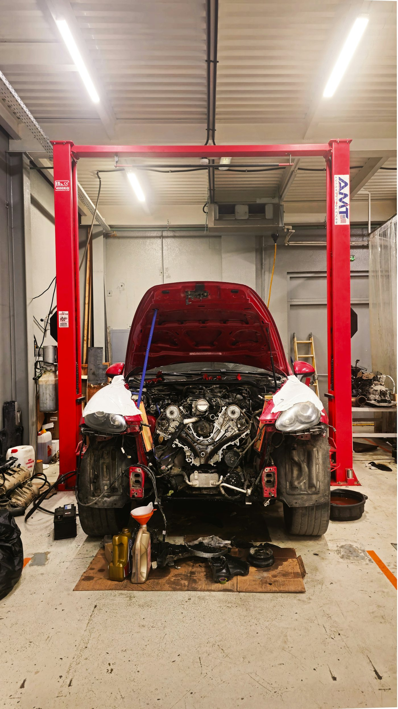
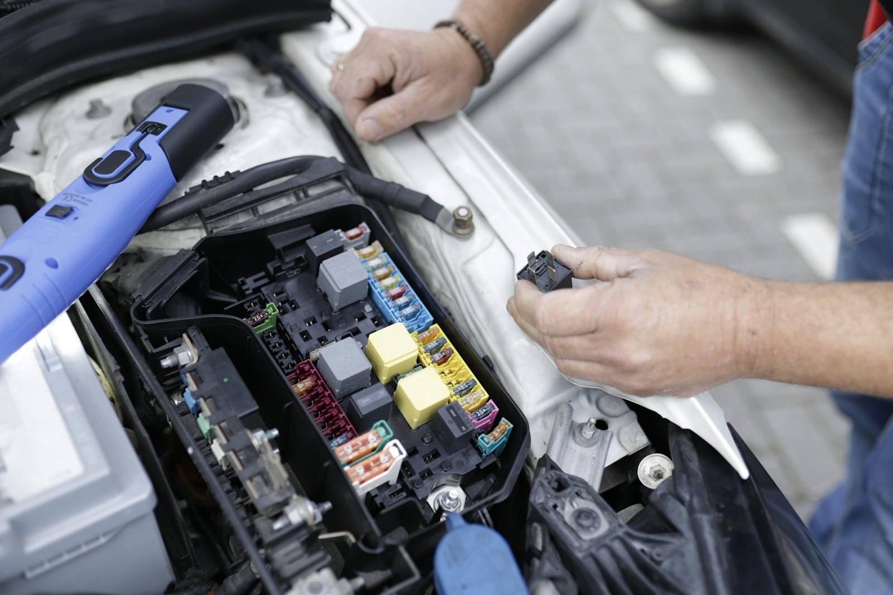

About
The record, plainly stated
This page sticks to what can be verified in public business records, and says so out loud where it cannot. A shop's reputation is built in its bays, not in website copy.
1402 W Irving Blvd
Japanese Auto Repair sits on West Irving Boulevard in Irving, Texas. Business records list it as Quj Inc Japanese Auto Repair, categorised as auto repair.
Public listings and customer reviews point to the same focus the name suggests: Japanese vehicles, with Honda, Toyota and Nissan named specifically, and everyday work — maintenance, oil changes, brakes, diagnostics and inspection.
That is the whole verified picture. There is no claim here about how long the shop has been open, who works in it, what it is certified for, or what it charges — because none of that is confirmed. Ask on the phone; that is the only place those answers exist.
Call (972) 253-6031
Suggested content — for owner reviewWhat is verified
Every item below appears in public business listings for this business.
From public business listings
What the owner should confirm
These are deliberately left blank rather than invented. Each one can be filled in once the owner confirms it.
- Years in business and the shop's own history
- Technician names, training and certifications
- Any parts or labour warranty, and its terms
- Which inspections are currently offered
- A working email address or booking method
- Whether loaner, shuttle or after-hours drop-off exist
- Accepted payment methods
- Full list of makes serviced beyond Honda, Toyota and Nissan